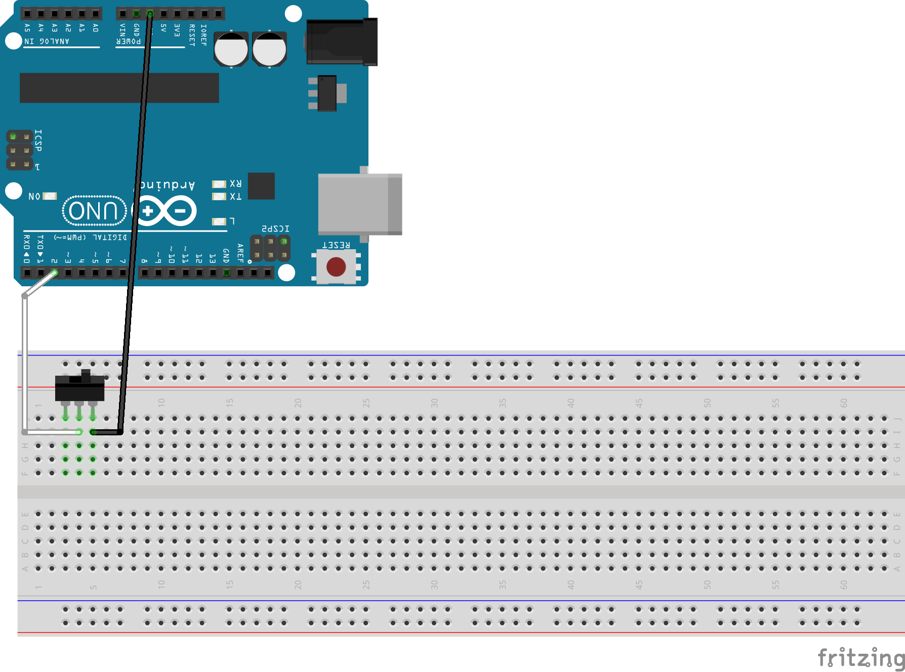
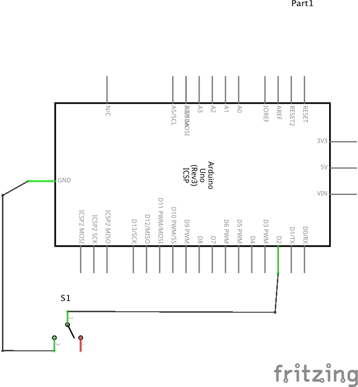

Measure a binary physical property as a single-bit number.
Some devices in the physical world do approximate a digital reality: switches are usually either on or off. But even these devices have non-ideal properties reflecting the physical reality, e.g. switch contacts can “bounce” as they make contact, creating a momentary pulse train rather than a clean on/off transition.
A digital input is essentially a single-bit analog-to-digital converter, albeit with an ambiguously defined threshold between the voltages representing zero and one. The digital input sampling rate can be much higher than the 10-bit ADC, so much higher frequency digital signals could be processed with careful real-time programming.
A related challenge exercise is the Arduino RCtime tutorial in which a photoresistor-capacitor circuit is used to form an ad-hoc ADC using a single digital I/O pin. Multiple bits of conversion resolution are obtained from measuring the single input bit over time.
 